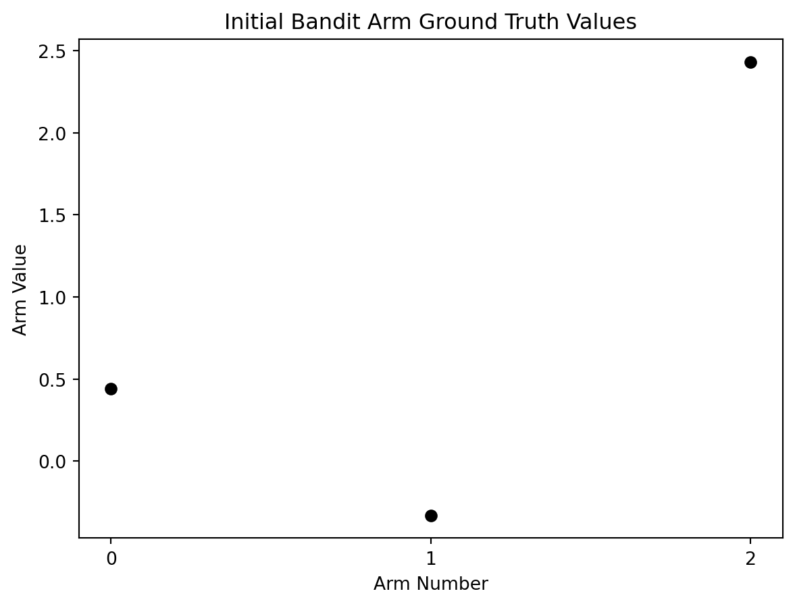

Creating and Solving Simple N-Arm Bandits with RL Agents
RL
Code
Bandit
Author
Jay Lowe
Published
October 8, 2022
evaluation methods explained
Article Summary
Learn how to create a simple N-armed bandit and train an RL agent to its optimal policy and value function.
Creating an n-armed bandit
Defining a bandit
A bandit represents an environment, a set of rewards, and a set of actions.
For example, a one armed bandit has one possible action (one “arm” or lever) in its environment and pulling that arm generates one set of rewards–typically as a randomly generated number between two set intervals such as 0 and 1.
Why bandits?
RL agents use evaluation methods to dictate what actions it takes, instead of instruction from a combination of loss/reward/etc. functions.
Guiding an RL agent through evaluative feedback will help it understand which actions provide the most reward but doesn’t specify which action provides the best or worst outcomes.
Bandits allow us to create simple test beds for training RL agents in. An RL agent must learn to maximize total reward when interacting with the bandit given a number of action selections.
If your bandit has three arms and the RL agent can choose to pull one of those three levers 1000 times–which combination of lever pulls will lead to the highest possible reward? An effective RL agent should learn the optimal sequence of when and which levers to pull.
Providing bandit actions a value
In life and in RL, if we had a perfect understanding of the short and long term value tied to an action we would be able to exploit that to our advantage.
Let’s create some perfect ground truth values for a three armed bandit.
import numpy as npimport matplotlib.pyplot as plt# assign a random starting seed valuenp.random.seed(5)# basis for generating the reward ground truthsmean =0# also known as mustandard_deviation =1# also known as sigmaarms =3# bandit valuesaction_range = np.arange(0, arms)reward_truths = np.random.normal(mean, standard_deviation, (arms))total_actions_allowed =1000# plot initial ground truth valuesplt.plot(action_range, reward_truths, 'o', color='black')# plot detailsplt.xlabel('Arm Number')plt.ylabel('Arm Value')plt.xticks(range(0,arms))plt.title('Initial Bandit Arm Ground Truth Values')plt.show()

Unfortunately, we don’t have perfect knowledge so we as agents must do our best to estimate the reward value of an action before we take it.
We can’t provide a static ground truth value for a bandit arm or else a greedy RL agent will always be able to quickly solve the problem in a way that doesn’t replicate real world situations.
A better action-value method
A good bandit arm should be assigned a set reward value to act as the ground truth, a range of possible reward values to pull from anchored on the ground truth, and the resulting reward should be randomly sampled from that range when the arm gets pulled.
I like to think of this as applying a standard deviation error bar to your starting point.
# apply a standard deviation error bar to the ground truth valuesplt.errorbar(action_range, reward_truths, np.ones(arms), fmt='o')# plot detailsplt.xlabel('Arm Number')plt.ylabel('Arm Value')plt.xticks(range(0,arms))plt.title('Initial Bandit Arm Ground Truth Values with Deviation Range')plt.show()plt.show()
In implementation, the agent will use a properly sampled distribution of actions and not a deviation bar.
Let’s update the the visualization of each bandit arm with 1000 sampled data points to better capture these good practices.
# for each arm's reward truth, generate distribution between 1 and total_actions_allowedreward_ranges = np.array([np.random.normal(true_reward,1,total_actions_allowed) for true_reward in reward_truths])# plot scatter points representing the sampled value range centered on ground truth valuefor i in action_range: plt.scatter(np.full((total_actions_allowed),i),reward_ranges[i])# plot ground truth rangesplt.plot(action_range, reward_truths,'o', color='black')plt.xlabel('Arm Number')plt.ylabel('Arm Value')plt.xticks(range(0,arms))plt.title('Initial Bandit Arm Ground Truth Values with Sampling Applied')plt.show()
For each additional bandit arm we add, the same process will occur. Check out a 15 arm bandit, with twice the standard deviation, that as 2000 total action “time steps”.
# updated bandit valuesarms =15standard_deviation =2action_range = np.arange(0, arms)reward_truths = np.random.normal(mean, standard_deviation, (arms))total_actions_allowed =2000# for each arm's reward truth, generate distribution between 1 and total_actions_allowedreward_ranges = np.array([np.random.normal(true_reward,1,total_actions_allowed) for true_reward in reward_truths])# plot scatter points representing the sampled value range centered on ground truth valuefor i in action_range: plt.scatter(np.full((total_actions_allowed),i),reward_ranges[i])# plot ground truth rangesplt.plot(action_range, reward_truths,'o', color='black')plt.xlabel('Arm Number')plt.ylabel('Arm Value')plt.xticks(range(0,arms))plt.title('Initial Bandit Arm Ground Truth Values with Sampling Applied')plt.show()
The wider range of values to sample from and increased number of arms increase the complexity, thereby making it harder for the agent to find the optimal value function.
Next up
Now that we know how to create a simple n-armed bandit, we need to build an RL agent capable of maximizing reward during interactions.
Solving a bandit?
Greedy and nongreedy actions
An agent will take a greedy action if it has been told to exploit its environment and choose the highest reward possible.
It will choose the nongreedy action during exploration in an attempt to better estimate the reward value an action will provide.
One should exploit once the optimal policy and value functions have been determined, as that will lead to maximum rewards.
Identifying the right ratio of exploitaton to exploration and the exploration decay rate plays a critical role in a succesfully converging an RL agent to optimal performance.
Meet ε
The ratio of when the agent chooses to exploit or explore commonly gets denoted with the greek notation of epsilon ε.
In general, exploration should be occur drastically less then exploit, as the agent should be focused on finding the maximum reward, so usually we set ε to equal to .1 or less.
Why exploration works
If you were to give an agent infinite resources and an ε value greater then zero, as it approaches the limit of infinity, it will exhaust all possible actions and thereby discover the ground truth values of a bandit.
Agents do not have infinite resources but give them enough time and they will approach the limit close enough to accurately estimate the ground truth value to a certain acceptable degree.
Core concepts
Given an environment and a set of actions that can be performed in that environment, an RL algorithm learns how to maximize reward within the context of a measurable goal.
Hearby, the RL algorithm performing actions shall be known as the agent.
Meet the agent
TODO - meet agent Rae?
My three year old agent Rae has a bedroom containing various features including toys, books, a bed, and much more.
Inside her bedroom environment, she can perform many actions such as playing with her toys, reading the books, jumping or sleeping in the bed, etc.
Depending on if she wants to play or go to sleep–the goal set for her in this bedroom will determine which actions lead high rewards.
For example, if whe wants to go to sleep then climbing into bed and getting tucked into the sheets would produce high reward while getting jacked up on blocks falling would produce low reward (as they rile her up).
What can you solve with reinforcement learning?
Problem statements with a well defined environment and bounded set of actions make can typically be solved using RL methods.
Some examples of bounded problem statements include: - Robotics: robot appendanges typically have a limited range of motion and must move or interact with physical objects in a finite environment (typically dictated by their sensors) - Games: a game board has a defined state at any given point with a limited set of actions determined by the rules of the game - Cooking: given a well defined set of taste preferences as a goal, an RL agent can combine available ingredients with methods of cooking available to it - Stock market predictions: a market has a defined state at a given point of time and a limited number of ways to interact with it
Essentially, anything that has a limited set of actions in a defined environment could be jigged into a RL problem if progress towards a goal in that context can be measured.
Additional components of an RL algorithm
Now that we know the basics, we must capture some additional nuances required to effectively communicate to an algorithm what it must accomplish.
How an RL agent knows which actions to take
An environment can be used in many different ways depending on the goal an agent has at the time (imagine all the ways you can use your kitchent).
The policy determines which actions lead to the best outcome by mapping all actions possible, given the state of the environment, to a known reward value.
For example, an agent such as Rae operating in her bedroom will have seperate policies when playing vs going to sleep. Her playtime policy will put rewards on actions related to her toys while her sleep policy will place a reward on actions that calm her down.
Actions have results
After taking an action in its environment, the agent will measure how much progress it made towards its goal.
The amount of progess made takes the form of a singular number known as the reward signal. RL agents exist to find the path to maximum reward.
RL agents will sometimes use the resulting reward to alter the policy mappings.
If Rae finds that playing with a toy in a particular way was especially fun when using her playtime policy, she may value that action more next she plays.
Rewards have both an immedate and long term payoff
How do RL agents handle differed rewards? If for example I offered you $1,000 today or $10,000 dollars tomorrow–which one leads to the most long term reward?
The value function bakes in discounted future rewards in conjunction with the immedate rewards to better represent which actions lead to the best long term outcome.
RL agents will always attempt to find the optimal policy that leads to optimal rewards.
Coming back to Rae’s playtime policy, taking the time to slowly build up a large tower of blocks might not be that fun until the last piece gets put into place–upon which a massive reward spike hits and she has the most fun possible.
Dimming the lights and reading stories during her sleeping policy might not immedately lead to sleep, as opposed to forcing her into bed, but they put her into a tired state that greatly increases the chances of the sleep action occuring.
An effective value function represents effective estimation of value–the single most important component to an RL agent–as this leads to accurate mappings of actions to reward.
Planning for future actions
Sometimes an RL agent will have access to an environmentmodel that estimates the results of an action.
A model may not always be available but can be particularly useful for games, or simple physics environments, in which clear causation exists.
When I’m teaching Rae about physical phenomona such as the water cycle, I will often employ a model that includes a temperature scale and the states of water for experimentation.
The difference between reinforcment learning, supervised learning, and unsupervised learning
Supervised learning typically means we supply the algorithm with some form of training dataset that we have vetted as correct. For example, a computer vision model will be trained on pictures with human generated lables specifying what each object in the picture represents.
Unsupervised learning removes the human verified data and substitues it with a method to find hidden correlations and trends to create machine generated training data.
Unlike these traditional machine learning (ML) algorithms, RL algorithms do not utilize a training datset. Instead they attempt to maximize reward through repeated exploration and exploitation.
RL can be combined with other ML techniques
RL algorithms can utilize techniques found in un/supervised learning, and can also benefit from the introduction of sub-problems, but fundamentally does not require them.
I think of RL algorithms as a way to imitate the learning processes used by humans, and other animals, and often mimics known nuerological phenomoman observed in the biology fields.
Deep reinforcment learning explained
Use a deep neural network for your policy and you have deep RL.
How to get value
The five goals listed above map into five actionable categories:
take action on the fatherhood and developer actions immediately in your day-to-day living (each article will include examples on how to do this)
relate my summaries of technologies and the projects I’m building to your own working experience
challenge me on my fatherhood beliefs if you disagree, and if you find your own beliefs challenged–think deeply about that
experiment with health changes to a rational degree (we have different bodies, be aware)
learn from, then emulate, the results of my content creation and marketing strategies
For dads:
Success and life fulfillment come as a package. You need to have it all!
If for example, you don’t agree with the importance of having great physical and spirtual health, then how will your children be healthy?
You know best for your family.
Don’t trust homeschooling only because I do it and don’t put your kid into a public school because you don’t know better. Have an intent behind your action.
For everybody else:
The fatherhood components to my writing will not always be present and will be designated with a fatherhood tag for those who do not benefit from dad-related content.
Maybe you have a father present in your life, such as your dad or a relative/friend with children, in which case you can help them out.
This blog got started because my wife shares lots of relevant dad content with me and I wanted to share my thoughts and beliefs as they develop. Writing solidifes concepts!
If you only benefit from ML developer content–awesome! Enjoy the content, I will post a lot of it.
Why “Sovereign” Tech Dad
We live in an era of constant attention-seeking products and government welfare states. To state the obvious logic, if you don’t have independence from these systems–you depend on them.
Independence promotes you to take meaningful risks. Get enough of it and your behavior will change to emphasize self-ownership and rational thought grounded in deterministic goals (goodbye fatalists üëã) instead of consumption as a solution.
Ideally, you should recognize to some degree the importance of globally integrated economies. What happens in China or Europe impacts North America and vice-versa.
Use emerging digital solutions to put yourself into a location-independent position. You should live and work because you love it there and you get good tax benefits–not because you can’t feed your family if you move 40 miles.
I want you to benefit from changes on the global scale. Nationalism only works when your side wins, so don’t pit yourself against the rally when you could instead gain from it.
Final thoughts and a call to action
Pick the parts of the blog relevant to you.
Build valuable products, learn everyday, treat your family well, be healthy, and make money in a way that leads to independence.
I want to hear about your success! DM me or tweet. I would love nothing more then to show case the work and achievements of others!